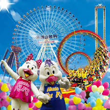

AboutUs

你有多久沒再享受如孩童般放肆尖叫/嗨翻天的樂趣?！現在的樂園更是趣味十足，根本讓人想一玩再玩，尤其搭配一年四季都有推出不同的節慶活動，
不僅僅有主題樂園設施可以玩樂，更有非洲部落動物區及夏天必備的水樂園，待上一整天不夠！現在還有夜宿動物園的住宿規劃，建議全部都要體驗過！
小編彙整必玩設施、優惠門票、節慶主題活動，讓你一篇就能了解六福村最新資訊。結合飯店專車接送&安排必吃美食的套票行程！
你有多久沒再享受如孩童般放肆尖叫/嗨翻天的樂趣?！現在的樂園更是趣味十足，根本讓人想一玩再玩，尤其搭配一年四季都有推出不同的節慶活動，
不僅僅有主題樂園設施可以玩樂，更有非洲部落動物區及夏天必備的水樂園，待上一整天不夠！現在還有夜宿動物園的住宿規劃，建議全部都要體驗過！
小編彙整必玩設施、優惠門票、節慶主題活動，讓你一篇就能了解六福村最新資訊。結合飯店專車接送&安排必吃美食的套票行程！